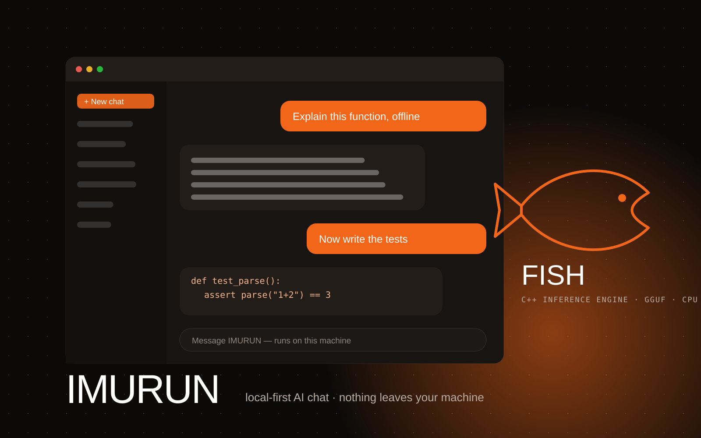
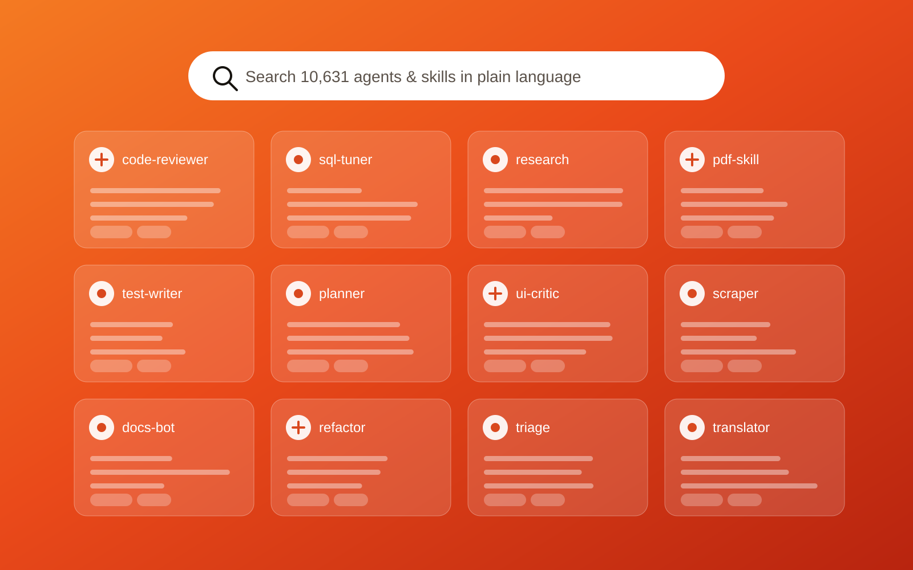
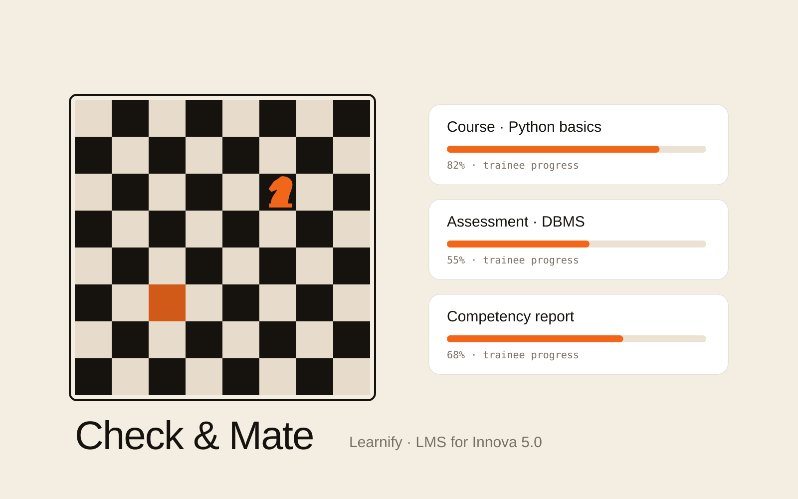
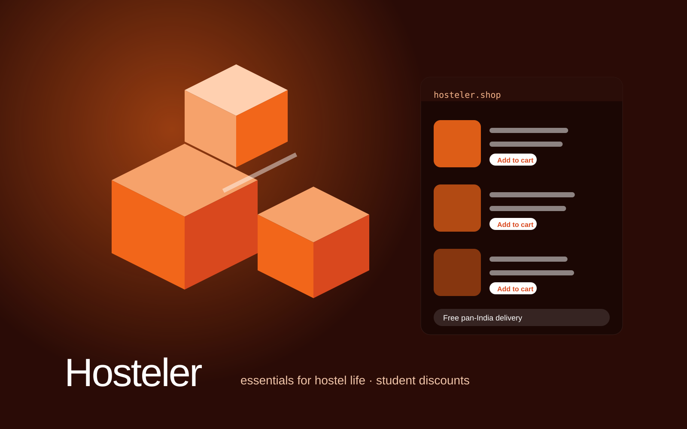
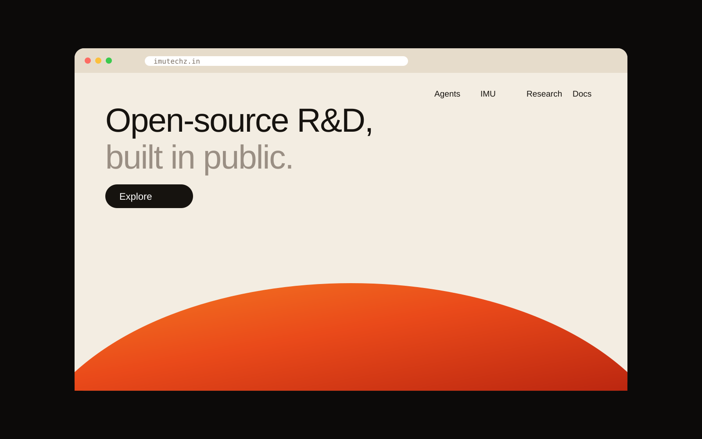

Kolkata, India · --:--:-- IST
ShubhamMallick — founder of ImuTechz and AI Developer intern at Potion Labs AI Technologies
Python backend & applied-AI developer building FastAPI services, RAG pipelines and local-first AI — in the open. Shipped, not just built.

ScrollEst. 2025 · West Bengal
Selected work
Every build →- 01

IMURUNLocal-first AI on its own C++ engine, FISH - 02

Agents & Skills directory10,631 open-source agents and skills - 03

LearnifyCheck & Mate LMS · began as an AI study companion - 04

HostelerE-commerce for hostel students · founded 2026 - 05

imutechz-webThe ImuTechz website · Next.js + Supabase
Let’s build
something open.
founder@imutechz.inshubham.mallick1440@gmail.comGitHubLinkedInSend a message →